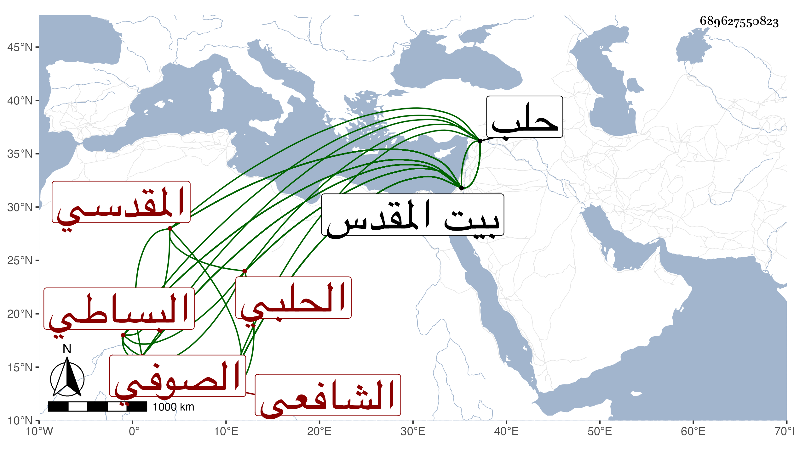

0902Sakhawi.DawLamic.ITO20230111-ara1.EIS1600.689627550823
Biography ID: 689627550823
216
أبو بكر بن محمد بن عبد الله التقي الحلبي الأصل المقدسي الشافعي الصوفي البساطي ويعرف بالطولوني لسكناه المدرسة الطولونية في بيت المقدس . ولد في ربيع الأول سنة ثمان وأربعين وسبعمائة وكان يذكر أنه سمع من العماد بن كثير وغيره وكذا سمع على ابن صديق البخاري بفوت مجلس من أثنائه ولو وجد من يعتني به لأدرك القدماء وكان خيرا كثير العبادة والورع معروفا بذلك من ابتدائه إلى انتهائه لم تعلم له صبوة مع جودة الخط والنظم والنثر وقد أضر بأخرة وانقطع بالمدرسة المشار إليها وكان شيخها وحدث باليسير سمع منه الشهاب بن أبي عذيبة والنحم بن فهد . ومات بالقدس في سنة ثلاث وأربعين . ذكره شيخنا في إنبائه فقال أبو بكر الحلبي نزيل بيت المقدس تلمذ للشيخ عبد الله البسطامي وكان له اشتغال بالفقه والحديث ثم أقبل على العبادة وجاور ببيت المقدس انتهى . والظاهر أنه حفيد الجلال عبد الله البسطامي الذي لقيه البرهان الحلبي في سنة اثنتين وثمانين وترجمه ابن أبي عذيبة بأنه كان خطيب جامع باحسبتا في حلب مدة طويلة قبل الفتنة وبعدها ثم تركه أخيرا لعبد المؤمن الواعظ وقدم القدس في سنة أربع عشرة وتنزل في صوفية الخانقاه السلطانية أول ما بنيت فلما بطلت نزل الطولونية وسكنها بل ولي مشيختها وانقطع فيها للذكر والعبادة والتلاوة وتردد إليه أهل الخير في ليالي الجمع ودام مقتدى به نحو خمسين سنة كل ذلك مع الخط الحسن ونظم الشعر وأضر قبل موته . مات في رمضان سنة ثلاث وأربعين وهو ابن خمس وتسعين سنة ودفن بما ملا في حوش وحمل على الرؤوس وكان له مشهد حافل وعند رأسه نصيبة مكتوب بخارجها من نظمه ما كان له مدة في حياته عند رأسه بالطيلونية ينظرها
| رحم الله فقيرا | زار قبري وقرالي سورة السبع المثاني بخشوع ودعا لي |
وبداخلها من نظمه أيضا
| من زار قبري فليكن عالما | إن الذي لاقيت يلقاه |
| ويرحم الله فتى زارني | وقال لي يرحمك الله |
ومما كتبه عنه ابن أبي عذيبة من نظمه
| تكفل ربي للرضيع برزقه | ورباه في الأحشاء وهو جنين |
| فإن كنت تبغي الرزق من عند غيره | فذاك جنون والجنون فنون |
ورأيت فيمن ترجمه بعضهم أبو بكر بن محمد المجيدي البسطامي نزيل بيت المقدس وخليفة عبد الله البسطامي كان صالحا زاهدا عابدا للناس فيه اعتقاد . مات في يوم الأربعاء رابع عشرين شعبان سنة أربع وأربعين وقد جاز السبعين وأخرجت جنازته خلق جنازة ابن رسلان وبكى عليه الزين عبد الباسط كثيرا وتولى تجهيزه وأظهر أسفا عليه رحمه الله انتهى . والظاهر أنه هذا .
